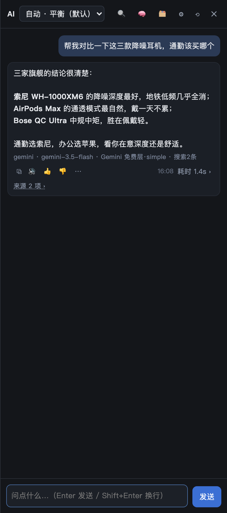
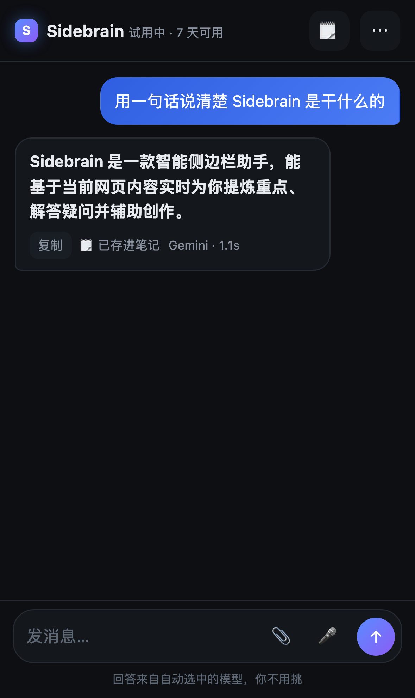
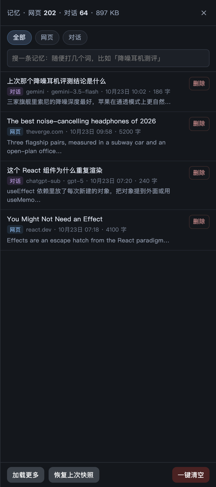

No API keys. No model picking. No five provider tabs. Install it, enter your email, ask. Our server routes every question to the model that is good enough and cheapest right now — free tiers first, paid fallback last.
macOS + Safari 16 or newer · 7 days free, then $8/month · cancel in one click

Every other sidebar is a reseller: you pay them monthly to reach a model you could reach yourself, and your history lives on their servers.
Gemini's free tier, Groq, Cloudflare, OpenRouter's free models — the router tries those before it touches anything that costs money. When one runs out of quota it moves to the next key or the next provider by itself.
If ChatGPT or Claude is installed and logged in on your Mac, Pro can use that quota through the official CLI. You paid for it already. There's a switch for it, off by default.
Pages you read and questions you ask are stored in one file on your Mac, searchable in plain language. Read it, delete an entry, or wipe it — with automatic snapshots so a mistake is undoable.
No account. No sign-in to us. The only thing you need is one API key — Gemini's free tier is enough to start.
A free extension from the Mac App Store. Sidebrain is a userscript, so no Xcode, no signing.
Save sidebrain.user.js into the folder the extension shows you.
The panel opens on any page. Pin it to the side and it stays there while you browse.
Gemini, Groq, DeepSeek, OpenRouter or a local Ollama — pick one, save, ask something.
No App Store, no extension, no second account. Step-by-step install guide → Open one link in Safari, add it to your Home Screen, sign in with the same email you use on the Mac.
Point Safari at /m on your Sidebrain address. It loads like a normal page — nothing to install.
Tap Share → Add to Home Screen. It gets an icon, opens full screen, keeps your chat between visits.
One email is one account. Your notes, your trial clock and your history are the same on both devices.

Everything the desktop version files away happens here too: ask a question, attach a screenshot or a file, speak it — the answer is written into your notes as a Markdown file, and each morning there is a memo waiting for you.
Pro remembers pages and conversations, then finds them by meaning rather than exact words. Ask sideways and it still lands.
Each entry shows where it came from, when, and which channel answered — so you can tell a page you read from something a model told you. Delete one, wipe a category, or restore the last snapshot.

7 days free. Then $8 a month. No per-question metering, no seat math, no annual lock-in.
One userscript and one email address. No API keys, no model names, no provider accounts. If you already have a ChatGPT or Claude subscription you can point the advanced mode at it, but the product does not need it.
Chat routing pauses until you subscribe at $8/month. Your memory and settings stay on disk and come back the moment you subscribe. Nothing is deleted, nothing auto-charges.
Because most questions are answered on free tiers — Gemini, Groq, OpenRouter free models, Cloudflare — and only fall through to a paid API when those are exhausted or out of depth. You are paying for the routing, not for tokens.
No. There is no Sidebrain account. Your API keys are stored in Safari's userscript storage on your Mac and sent only to the provider you picked.
Pro can use the OpenAI CLI you installed and logged into yourself. Whether that use fits your agreement with OpenAI is your call — the switch ships off by default, and we never proxy or resell quota.
Safari extensions can't carry a persistent right-side panel through a normal extension; a userscript runs in the page and can. It also means no review queue and no Xcode on your side. A native app is planned.
In ~/ai-gateway/memory/ — two JSONL files, one for pages, one for conversations. Backups of the last 20 delete/wipe operations sit next to them. Nothing is uploaded anywhere.
The channel is put on cooldown for as long as the provider asks, the router skips it, and it comes back on its own. You see which channel answered under every reply.
No. Pro is a beta: one developer, no support desk. Expect the panel to break on some sites. The beta notes list what is known to be broken and what to include in a report.
Which site it broke on, which channel answered (the line under the reply), and what you expected instead. That is it — open an issue.
Yes, a Pro tier is planned after the beta. Nothing you install today starts charging by itself, and testers get told before anyone else.